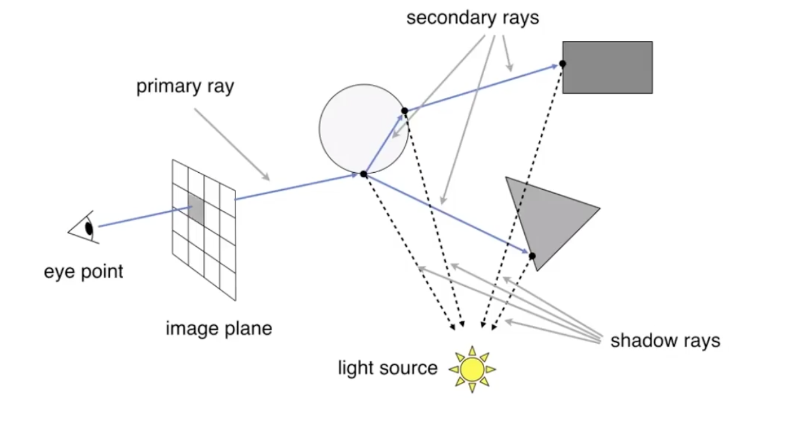
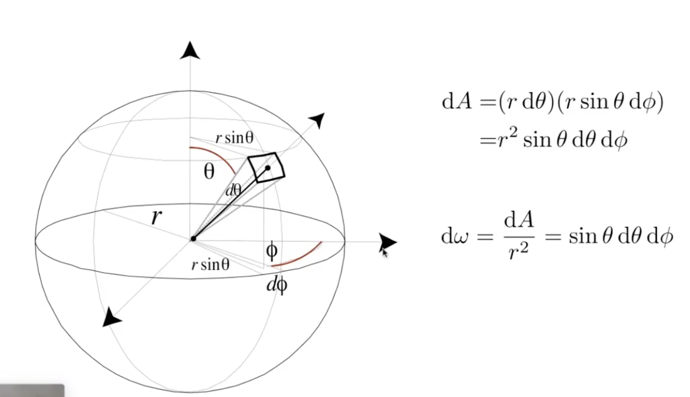
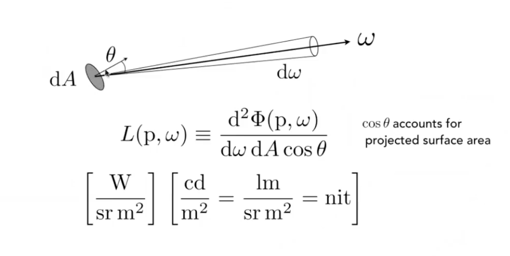
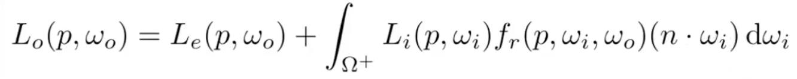
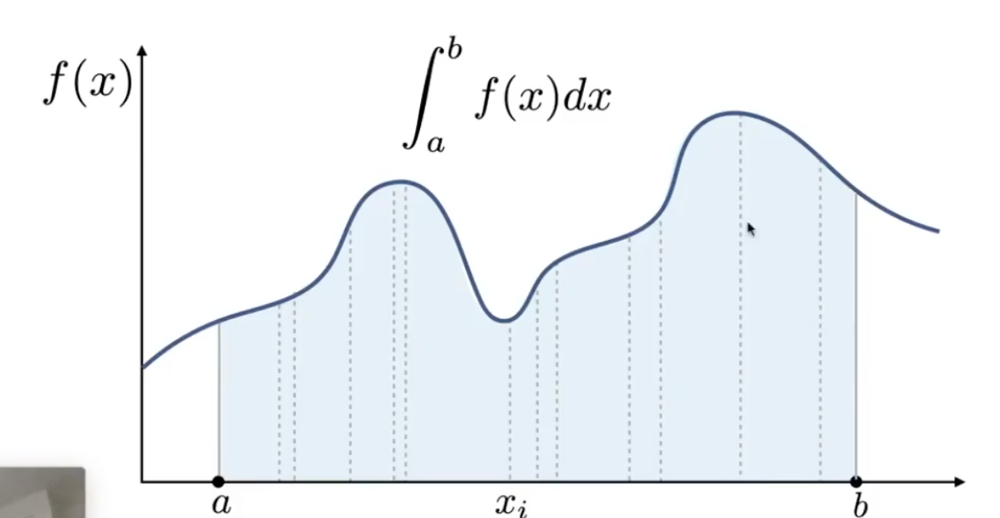

CG_Course
Computer graphis
反走样
卷积：对信号做平均
- 先模糊后再做采样
- 将图像频率降低
- 增加采样点 MSAA
- FXAA (Fast approximate AA)
- 得到锯齿图像后，平滑图像边界
- TAA (Temporal AA)
- Super resolution 超分辨率
- Deep learning
Z-buffer
Texture
纹理太小：
- Bilinear:双线性插值
- 取周围4个像素Texture的颜色做插值
- Bicubic
- 取周围16个像素Texture插值
纹理太大(走样)：
- 超采样(性能消耗大)
- 采用采样点均值
- Range Query 范围查询
- Mipmap: fast, approx., square
- 生成多张图，每张不同分辨率
- 各向异性过滤：矩形
- 不同方向表现不同
- EWA filter
- 用圆形覆盖多边形，多次查询，性能消耗大
- Mipmap: fast, approx., square
- Range Query 范围查询
Basic ray tracing
- Ray generation
- Ray object intersection
Acceleration(碰撞检测加速)
- Ray AABB intersection
- Spatial partition vs object partitions
- KD Tree
- BVH traversal
Whitted-Style Ray Tracing

- 考虑玻璃球/镜面的折射/反射
- 缺点：没考虑漫反射光线弹射
Radiometry (辐射度量学)
Radiant Energy and Vlux(Power)
Radiant Energy:能量
Flux: Power:单位时间的能量 lumen
Radiant Intensity: 一个立体角上的能量
power per unit solid angle(立体角)

- 微分立体角：$d\omega = \frac{dA}{r^2} = sin\theta d\theta d\phi$
- 立体角：$\omega = S / r^2$
- 角度投射到球的表面积与半价平方的比
- 弧长 = l / r，立体角类比弧长
- 椎在球面上张开了多大角度
Irradiance： power per unit area(单位面积能量)
- 投影到垂直光线方向的面积
Radiance：power per unit solid angle, per projected unit area
- 方向性

- Incident Radiance入射吸收的能量
- Irradiance / solid angle
- 单位面积上从一个方向传来的能量
- Irradiance / solid angle
- Exiting Radiance
- Intensity / projected unit area
- 向某一方向辐射出后单位面积的能量
- Intensity / projected unit area
Bidirectional Reflectance Distribution Function(BRDF)
从一个方向入射后，从其他方向发出的能量多少
$\Rightarrow$The Reflection Equation
The Rendering Equation

- 全局光照=自发光物体光+直接光照+间接光照
- 光=物体本身的光+从其他物体处接受的光线
- $L = E + KL = E + KE + K^2E + K^3E+\dots$
- $KE$：光线一次弹射，直接光照
- $K^2E$：光线两次弹射，间接光照
- 光栅化做到$E+KE$
Monte Carlo Path Tracing
Monte Carlo Integration: 蒙特卡罗积分

- 用随机采样的方法求定积分的近似解
- 采样越多，越准确
- 对谁积分，对谁采样
Path Tracing
每个像素，N = 1，只打出一条射线
光线追踪问题：递归没有终止情况！，解决方法：
- Russia Roulette(RR)俄罗斯轮盘赌
- 以p的概率大一条光线
- 以1-p的概率不打
实现步骤：
- 直接光照：直接对光源做采样，做$d\omega \rightarrow dA$的变换
- 间接光照，使用RR随机朝一个方向打出射线
Materia
Fresnel term:
- 绝缘体
- 光线与表面相平时，大多光线反射
- 光线与表面垂直时，大多光线折射
Microfacet
本博客所有文章除特别声明外，均采用 CC BY-SA 4.0 协议 ，转载请注明出处！